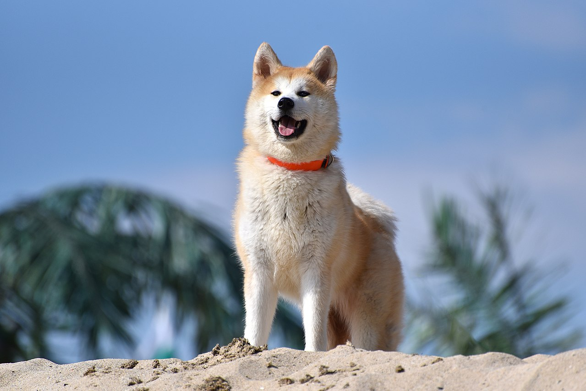

Welcome!


DoggyStyle is a website about dog breeds. here you can find information about your favorite animal, and not just that.
DoggyStyle is a website about dog breeds. here you can find information about your favorite animal, and not just that.
The Yorkshire Terrier is a small dog breed of terrier type, developed during the 19th century in Yorkshire, England, to catch rats in clothing mills. Ideally its maximum size is 7 pounds (3.2 kg) although some may exceed this and grow up to 15 pounds (6.8 kg). It is placed in the Toy Terrier section of the Terrier Group and in the Toy Group or Companion Group by other kennel clubs, including the American Kennel Club. A popular companion dog, the Yorkshire Terrier has also been part of the development of other breeds, such as the Australian Silky Terrier. It has a grey, black, and tan coat, and the breed's nickname is Yorkie.
The Pug is a breed of dog with physically distinctive features of a wrinkly, short-muzzled face, and curled tail. The breed has a fine, glossy coat that comes in a variety of colours, most often fawn or black, and a compact square body with well-developed muscles.
Pugs were brought from China to Europe in the sixteenth century and were popularized in Western Europe by the House of Orange of the Netherlands, and the House of Stuart. In the United Kingdom, in the nineteenth century, Queen Victoria developed a passion for pugs which she passed on to other members of the Royal family.
The Akita is a large breed of dog originating from the mountainous northern regions of Japan. There are two separate varieties of Akita: a Japanese strain, commonly called "Akita Ken" in Japan, "Akita Inu" ("inu" means "dog" in Japanese), or "Japanese Akita"; and an American strain, known as the "Akita" or "American Akita". The Japanese strain called the Akita Inu comes in a narrow palette of colors, with all other colors considered atypical of the breed, while the American strain known simply as the Akita comes in all dog colors. The Akita has a short double-coat similar to that of many other northern spitz breeds such as the Siberian Husky, but long-coated dogs can be found in many litters due to a recessive gene.